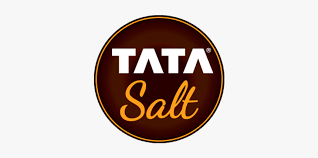
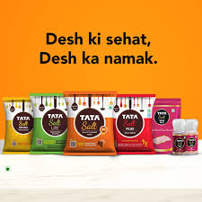
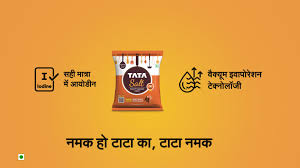

How India's kitchen essential became the ultimate symbol of purity, trust, and family values.

Tata Salt transformed kitchen staple into trust icon: Desh Ka Namak built values foundation, Namak Ho Tata Ka 2.0 refreshed legacy relevance. Purity + emotion = dominance.
Case study analyzes commodity differentiation through moral storytelling + modern evolution. FMCG trust blueprint: consistency creates conviction.
Truth: mothers choose salt like they choose values.
Unbranded salt commoditized. Tata insight: salt essential like values. Mother's role in moral upbringing = perfect emotional hook. Every meal = integrity moment.
Urban/rural family targeting. Simple, authentic storytelling bypassed exaggeration. Doordarshan mass reach created national household penetration.
"Transformed routine purchase into meaningful choice. Purity + values = unbreakable trust. Long-term recall > short-term sales."
Habit funnel: Awareness → Emotional association → Daily ritual → Brand loyalty. Foundation for decades of dominance.

Iconic jingle revival in modern contexts: weddings, classrooms, families. reinforced iodine + emotional relevance. Bridged generations without losing heritage.
Multiple films for scenarios/audiences. IPL + digital maximized visibility. Emotional + functional dual messaging appealed rationally and psychologically.
"Legacy refresh masterclass. Nostalgia + modernity = intergenerational relevance. Multi-film strategy scaled engagement perfectly."
TV reach → digital depth. Awards validated creative + strategic excellence. Protected trust while capturing new relevance.

Commodity linked to moral upbringing. Emotional association > functional differentiation.
Mother-child values connection = perfect targeting. Household trust flows through her choice.
Every meal = brand moment. Routine positioning creates switching resistance.
Namak Ho Tata Ka 2.0 modernized nostalgia. Legacy assets > new inventions.
Weddings, classrooms, families = universal relevance. Content variety scales engagement.
TV era timing created urban/rural penetration. Medium + message alignment = market leadership.
Tata Salt perfected commodity branding: Desh Ka Namak built values foundation, Namak Ho Tata Ka 2.0 refreshed modern relevance. Salt became trust symbol.
Universal blueprint: emotional conviction + legacy evolution. Tata Salt proved even kitchen staples thrive through moral storytelling + consistent refresh.
Greatness = every meal carries values.
At Brand Business Talk, we help brands with research, strategy, market insights, and growth recommendations. Let's build your brand growth strategy together.